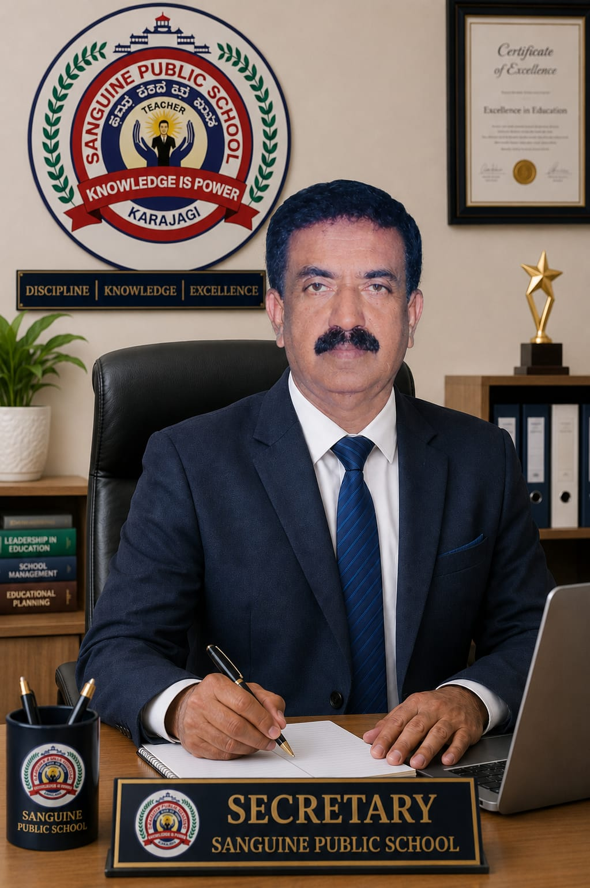

Mr. Shankrappa Basavannavar
Secretary
Mission: Provide visionary leadership and strategic oversight to uphold the school’s values and advance long-term goals.
Vision: Lead Sanguine to be a benchmark institution admired for outstanding student outcomes and strong community trust.